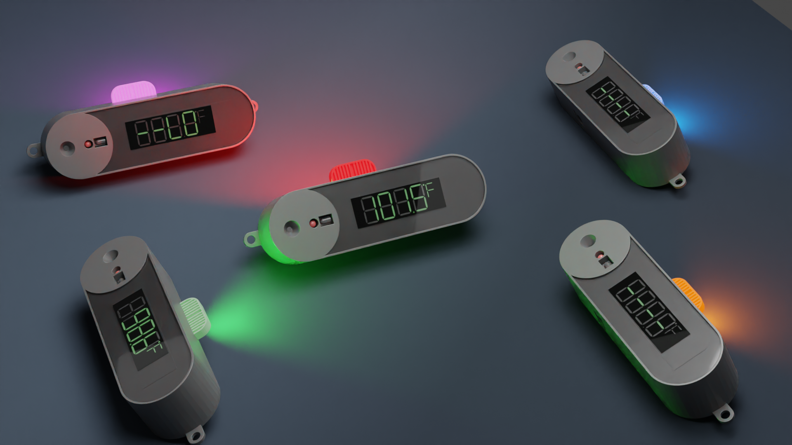
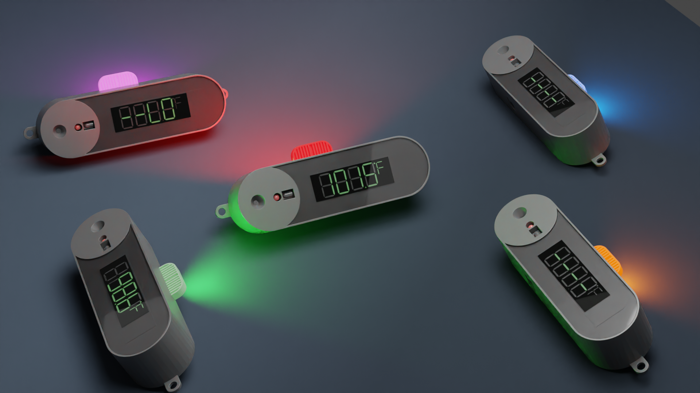

Problem
Ever since the COVID 19 pandemic hit the world, offices, organisations and public infrastructures have become alerted about screening the people visiting their premises. Measurement of temperature is considered to be a traditional and effective way of screening people with fever, which is considered to be a predominant symptom of the pandemic.
To avoid social spreading in the aforementioned locations, people have been employed in the entrances with pyrometer (Handheld temperature gun). But these devices can only be used to measure temperature and the further process of logging the temperature is done manually using notebooks which consumes a significant amount of time. Also, in most places, the user/visitor itself is responsible for logging their records and which in turn has chances of infection from the checking person or the pen they use.
Also, it has been recorded that these devices are prone to errors depending on the ambient temperature and luminance impact of sunlight. To avoid the waiting time and crowding in scenarios like this, a rapid thermal screening device with the best user experience was designed.
User
Public who undergo thermal screening while entering an office or a building.
My Role
I was in charge of the design, prototyping and manufacturing of the device. My primary role was to understand the user requirements and understand the ergonomics of a human being to design the product in a comfortable and humanized way so that the user does not feel the burden of using it.
Design Process
The process started with a basic understanding and assumptions on the user requirements and was translated into concept designs using pencil sketches and low fidelity 3D models. These digital prototypes were presented and brainstormed with the product development team. After these iterations, the users of different segments were presented with the selected models and feedbacks were received on user experience, usability and ergonomics. The design process took few iterations and the concept finalised.
The design concept was converted into a 3D model suitable for prototyping and was 3D printed to realise the form factor and get feedback from the users. The 3D model was eventually improvised with DFME and DFMA analysis to reduce cost and assembly time.
The device is now in the production stage and been deployed at 20+ locations inside Tamil Nadu Newsprint and Papers Limited.